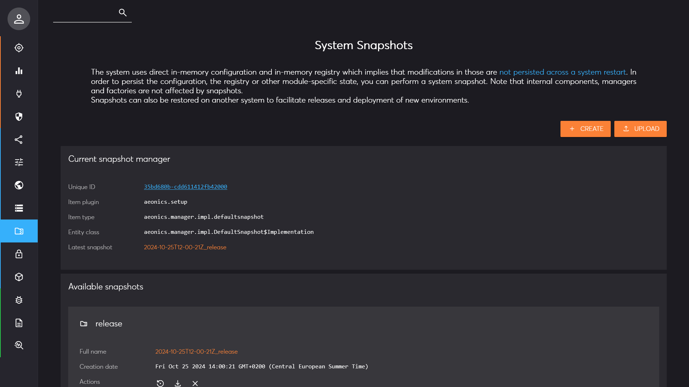
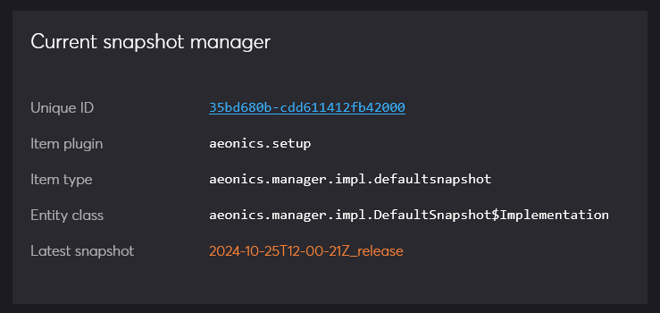
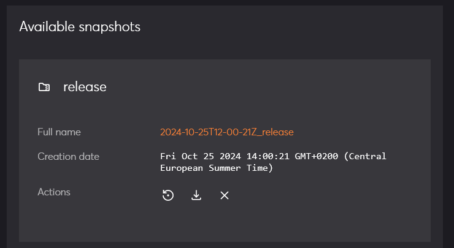
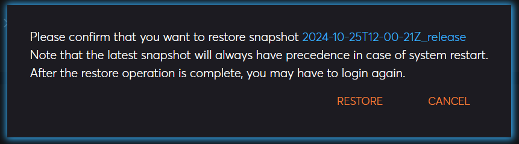
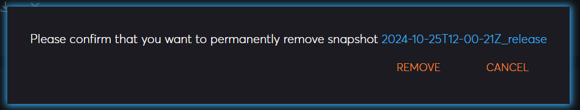

Management Interface Page: Snapshots
Description
This page allows to create, upload, download or restore snapshots. The snapshots include all config parameters, the entire registry and other information that are requested by specific plugins. The snapshots do not contain internal entities, the plugins themselves, the web applications, the definition of the managers nor other security settings. The goal is to replicate the setup from one system to another or rollback a modification if needed.
The top left search bar allows to quickly find the desired snapshot.

To upload an existing snapshot on the system, use the upload button on the top right of the page.
To create a new snapshot from the current setup, use the create button on the top right of the page.
Snapshot Manager
The first section of the page displays information about the current snapshot manager and the latest snapshot available. When the system reboots, the latest snapshot is loaded automatically unless specified otherwise.
The name of the currently loaded snapshot is set in the aeonics.manager.snapshot > current configuration parameter.

Available snapshots
The second section of the page lists all available snapshots in this system. They are ordered by date. For each of them, you have the possibility to restore, download, or remove the related snapshot.

When you restore a snapshot, the entire configuration and registry will be replaced. Therefore, you will probably have to login again so that changes are taken into account.

You will also have to confirm each action. Removing a snapshot is permanent and cannot be undone.
